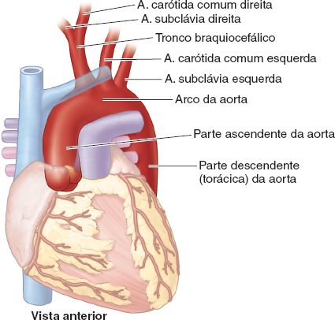
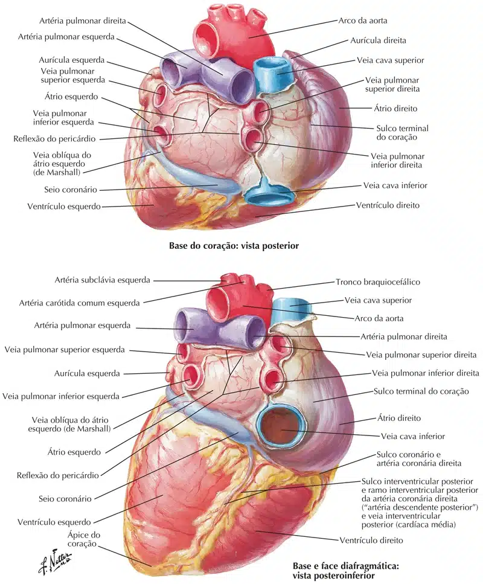

Também chamados de “os grandes vasos” do coração, recebem este nome justamente por se localizarem na base do coração.
Funcionam para transportar sangue do e para o coração à medida que ele bombeia este sangue.
Estão localizados em grande parte dentro do mediastino médio e outra parte no mediastino superior.
Os grandes vasos do coração incluem:
A a. aorta, o tronco pulmonar, as veias cavas superior e inferior e as quatro veias pulmonares.
MOORE: Keith L. Anatomia orientada para a clínica. 9 ed. Rio de Janeiro: Guanabara Koogan, 2024.
Aorta e seus ramos
A aorta é a maior artéria do corpo humano.
Ela carrega sangue oxigenado (bombeado pelo lado esquerdo do coração) para o resto do corpo.
A aorta surge do orifício aórtico na base do ventrículo esquerdo, com influxo pela valva semilunar aórtica.
Seu primeiro segmento é conhecido como parteascendentedaaorta, que se encontra dentro do pericárdio (coberto pela camada visceral).
Dela se ramificam as artérias coronárias.
O segundo segmento contínuo é o arco da aorta, do qual se ramificam as principais artérias para a cabeça, pescoço e membros superiores, que são:

MOORE: Keith L. Anatomia orientada para a clínica. 9 ed. Rio de Janeiro: Guanabara Koogan, 2024.
Tronco braquiocefálico (deste vaso saem as artérias carótida comum direita e subclávia direita)
Artéria carótida comum esquerda
Artéria subclávia esquerda
Após o arco da aorta, a a. aorta torna-se então em partedescendentedaaorta que continua através do diafragma até o abdome.
Artérias pulmonares
As artérias pulmonares recebem sangue com pouco oxigênio do ventrículo direito e o entregam aos pulmões para que ocorra a troca gasosa.
Essas artérias se iniciam comotronco pulmonar, um vaso espesso e curto, que é separado do ventrículo direito pela valva semilunar pulmonar.
O tronco está localizado anteriormente e medialmente ao átrio direito, compartilhando uma camada comum de pericárdio com a aorta ascendente.
Continua para cima, sobrepondo a raiz da aorta se direcionando para a região posterior do coração.
Em torno do nível de T5-T6 e abaixo do arco aórtico, o tronco pulmonar se divide nas artérias pulmonares direita e esquerda.
A artéria pulmonar esquerda fornece sangue ao pulmão esquerdo, bifurcando-se em dois ramos para suprir cada lobo do pulmão.
A artéria pulmonar direita é a artéria mais espessa e longa das duas, fornecendo sangue ao pulmão direito, também se divide em dois ramos.

NETTER: Frank H. Netter Atlas De Anatomia Humana. 7 ed. Rio de Janeiro: Elsevier, 2021.
Veias pulmonares
As veias pulmonares recebem sangue oxigenado dos pulmões, entregando-o ao lado esquerdo do coração para ser bombeado de volta ao corpo.
Existem quatro veias pulmonares, sendo uma superior e uma inferior para cada um dos pulmões.
Elas entram no pericárdio para drenar no átrio esquerdo, na superfície posterior.
O seio pericárdico oblíquo pode ser encontrado dentro do pericárdio, entre as veias esquerda e direita.
As veias pulmonares superiores retornam sangue dos lobos superiores do pulmão, com as veias inferiores retornando sangue dos lobos inferiores.
A veia pulmonar inferior esquerda é encontrada no hilo do pulmão, enquanto a veia pulmonar inferior direita corre posteriormente para a veia cava superior e o átrio direito.
NETTER: Frank H. Netter Atlas De Anatomia Humana. 7 ed. Rio de Janeiro: Elsevier, 2021.
Veias cavas
Veia cava superior
A veia cava superior recebe sangue desoxigenado da parte superior do corpo (superior ao diafragma, excluindo pulmões e coração), entregando-o ao átrio direito.
É formado pela fusão das veias braquiocefálicas, percorrendo-se inferiormente pela região torácica até a drenagem para a porção superior do átrio direito, ao nível da 3ª costela.
Quando a veia cava superior faz a sua descida, ela está localizada no lado direito do mediastino superior, antes de entrar no mediastino médio, ao lado da aorta ascendente.
Veia cava inferior
A veia cava inferior recebe sangue desoxigenado da parte inferior do corpo (todas as estruturas inferiores ao diafragma), devolvendo-o de volta ao coração.
É inicialmente formado na pelve pelas veias ilíacas comuns que se unem. Viaja através do abdome, coletando sangue das veias hepática, lombar, gonadal, renal e frênica. A veia cava inferior passa então pelo diafragma, entrando no pericárdio no nível de T8. Ele drena para a porção inferior do átrio direito.
MOORE: Keith L. Anatomia orientada para a clínica. 9 ed. Rio de Janeiro: Guanabara Koogan, 2024.